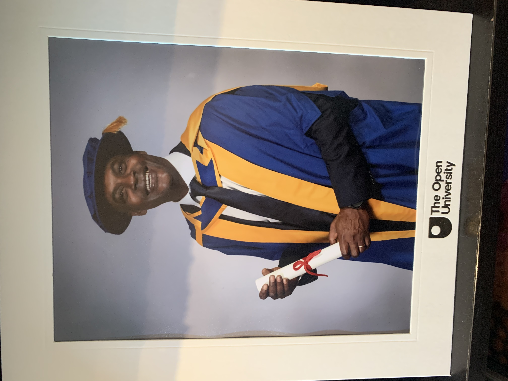

Lived experience
First-hand understanding of studying in custody, rebuilding identity through education and navigating release.
Government · Justice · Education · Research
Dr Stephen Akpabio-Klementowski helps public bodies, justice and education providers, research teams and individuals turn complex questions about rehabilitation and change into practical action.

A rare, triangulated view
First-hand understanding of studying in custody, rebuilding identity through education and navigating release.
Doctoral research into punishment, rehabilitation, higher education and desistance, grounded in qualitative enquiry.
A decade managing higher-education delivery across a complex, politically sensitive prison environment.
Featured government offer
A focused, independent review for public bodies that need to understand what is helping—or preventing—education and rehabilitation programmes from producing meaningful outcomes.
The review combines documentary evidence, stakeholder voices and secure-estate insight. It is designed to expose the gap between a programme as written and a programme as experienced.
Consultancy services
Engagements range from a single advisory session or keynote to a structured research commission, programme review or longer strategic partnership.
Design and review learning pathways, access, continuity and institutional conditions for higher education in custody.
Translate research and lived experience into credible policy thinking about identity, agency and sustainable change.
Examine delivery barriers, stakeholder assumptions and the difference between intended and experienced outcomes.
Direct, evidence-led sessions for leaders who need difficult operational realities made clear and actionable.
Research questions, interview design, evidence synthesis and interpretation informed by doctoral-level practice.
Help organisations define meaningful outcomes and understand how participants actually experience a programme.
Advice on inclusive, distance and secure learning from someone who has occupied both sides of the teaching relationship.
Keynotes and facilitated sessions on education, identity, agency, punishment, rehabilitation and system change.
One-to-one scrutiny for researchers, educators and professionals who need to sharpen a question, strengthen an argument or make a complex project workable.
A structured perspective session for people navigating a major transition and seeking practical clarity about identity, opportunity and their next deliberate action.
Private advisory is reflective and educational. It is not therapy, legal advice or offender casework.

Doctor of Philosophy, The Open University, 2025Research grounded in practice
Stephen’s doctoral research investigates the conditions that support prisoners undertaking higher-education qualifications—and the role education can play in identity change and desistance from crime.
Semi-structured interviews, qualitative enquiry and autoethnographic analysis.
Prison education, desistance, reoffending, penal reform, convict criminology and lived-experience research.
The experience behind the work
Stephen left school without formal qualifications and later received a sixteen-year prison sentence. Education began with literacy and numeracy, then became the means through which he rebuilt his future: an undergraduate degree, two postgraduate degrees and, ultimately, a PhD in criminology.
Today he teaches criminology, leads higher-education partnerships across the English secure estate and contributes to penal reform. His work does not romanticise individual agency or ignore structural constraint. It asks a harder and more useful question: within the reality people and institutions face, what can they do next that genuinely improves the outcome?
“I lived inside the system, studied it academically and now advise it from the outside.”

Selected credentials
Academic depth, teaching experience and public-service leadership brought together in one independent practice.
Leadership
The Open University, 2015–present
Teaching
The Open University and University of Westminster
Public service
Prison Reform Trust, 2022–present
Publication
Degrees of Freedom, Policy Press, 2019
Start with the decision
Send a short outline of the challenge, the audience and the decision or outcome you are working towards. Stephen will respond to arrange an initial conversation.